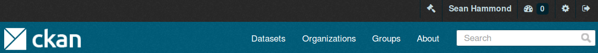
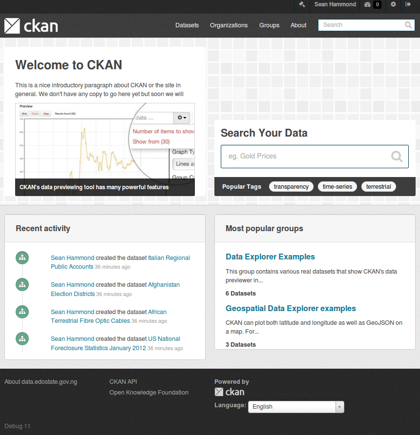

Customizing CKAN’s CSS¶
See also
There’s nothing special about CSS in CKAN, once you’ve got started with editing CSS in CKAN (by following the tutorial below), then you just use the usual tools and techniques to explore and hack the CSS. We recommend using your browser’s web development tools to explore and experiment with the CSS, then using any good text editor to edit your extension’s CSS files as needed. For example:
- Firefox developer tools
- These include a Page Inspector and a Style Editor
- Firebug
- Another web development toolkit for Firefox
- Chrome developer tools
- Tools for inspecting and editing CSS in Google Chrome
- Mozilla Developer Network’s CSS section
- A good collection of CSS documentation and tutorials
Extensions can add their own CSS files to modify or extend CKAN’s default CSS. Create an example_theme.css file in your extension’s public directory:
ckanext-example_theme/
ckanext/
example_theme/
public/
example_theme.css
Add this CSS into the example_theme.css file, to change the color of CKAN’s “account masthead” (the bar across the top of the site that shows the logged-in user’s account info):
.account-masthead {
background-color: rgb(40, 40, 40);
}
If you restart the development web server you should be able to open this file at http://127.0.0.1:5000/example_theme.css in a web browser.
To make CKAN use our custom CSS we need to override the base.html template, this is the base template which the templates for all CKAN pages extend, so if we include a CSS file in this base template then the file will be included in every page of your CKAN site. Create the file:
ckanext-example_theme/
ckanext/
example_theme/
templates/
base.html
and put this Jinja code in it:
{% ckan_extends %}
{% block styles %}
{{ super() }}
<link rel="stylesheet" href="/example_theme.css" />
{% endblock %}
The default base.html template defines a styles block which can be extended to link to custom CSS files (any code in the styles block will appear in the <head> of the HTML page).
Restart the development web server and reload the CKAN page in your browser, and you should see the background color of the account masthead change:
This custom color should appear on all pages of your CKAN site.
Now that we have CKAN using our CSS file, we can add more CSS rules to the file and customize CKAN’s CSS as much as we want. Let’s add a bit more code to our example_theme.css file. This CSS implements a partial imitation of the datahub.io theme (circa 2013):
/* =====================================================
The "account masthead" bar across the top of the site
===================================================== */
.account-masthead {
background-color: rgb(40, 40, 40);
}
/* The "bubble" containing the number of new notifications. */
.account-masthead .account .notifications a span {
background-color: black;
}
/* The text and icons in the user account info. */
.account-masthead .account ul li a {
color: rgba(255, 255, 255, 0.6);
}
/* The user account info text and icons, when the user's pointer is hovering
over them. */
.account-masthead .account ul li a:hover {
color: rgba(255, 255, 255, 0.7);
background-color: black;
}
/* ========================================================================
The main masthead bar that contains the site logo, nav links, and search
======================================================================== */
.masthead {
background-color: #3d3d3d;
}
/* The "navigation pills" in the masthead (the links to Datasets,
Organizations, etc) when the user's pointer hovers over them. */
.masthead .navigation .nav-pills li a:hover {
background-color: rgb(48, 48, 48);
color: white;
}
/* The "active" navigation pill (for example, when you're on the /dataset page
the "Datasets" link is active). */
.masthead .navigation .nav-pills li.active a {
background-color: rgb(74, 74, 74);
}
/* The "box shadow" effect that appears around the search box when it
has the keyboard cursor's focus. */
.masthead input[type="text"]:focus {
-webkit-box-shadow: inset 0px 0px 2px 0px rgba(0, 0, 0, 0.7);
box-shadow: inset 0px 0px 2px 0px rgba(0, 0, 0, 0.7);
}
/* ===========================================
The content in the middle of the front page
=========================================== */
/* Remove the "box shadow" effect around various boxes on the page. */
.box {
box-shadow: none;
}
/* Remove the borders around the "Welcome to CKAN" and "Search Your Data"
boxes. */
.hero .box {
border: none;
}
/* Change the colors of the "Search Your Data" box. */
.homepage .module-search .module-content {
color: rgb(68, 68, 68);
background-color: white;
}
/* Change the background color of the "Popular Tags" box. */
.homepage .module-search .tags {
background-color: rgb(61, 61, 61);
}
/* Remove some padding. This makes the bottom edges of the "Welcome to CKAN"
and "Search Your Data" boxes line up. */
.module-content:last-child {
padding-bottom: 0px;
}
.homepage .module-search {
padding: 0px;
}
/* Add a border line between the top and bottom halves of the front page. */
.homepage [role="main"] {
border-top: 1px solid rgb(204, 204, 204);
}
/* ====================================
The footer at the bottom of the site
==================================== */
.site-footer,
body {
background-color: rgb(40, 40, 40);
}
/* The text in the footer. */
.site-footer,
.site-footer label,
.site-footer small {
color: rgba(255, 255, 255, 0.6);
}
/* The link texts in the footer. */
.site-footer a {
color: rgba(255, 255, 255, 0.6);
}